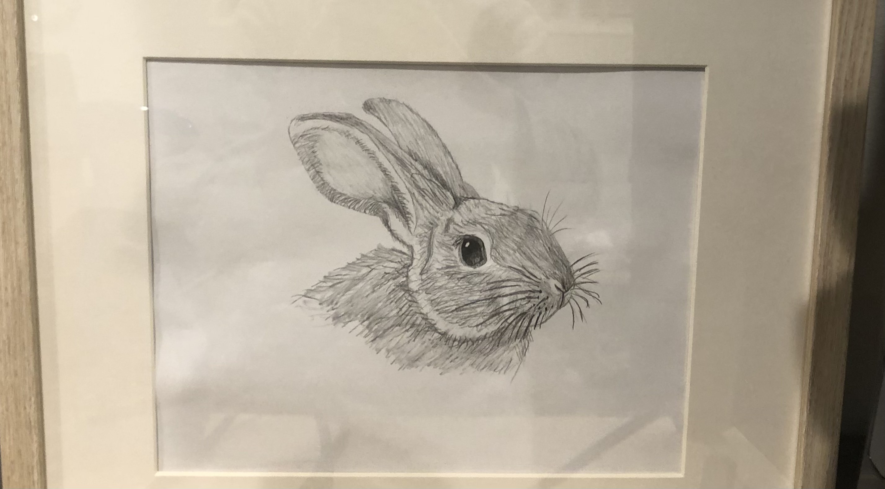

Throughout my life, I have loved to draw with just a pencil and a sheet of paper, enjoying the texture and simplicity of the monochrome images. I enjoy drawing realistic images, often drawing pictures of animals because of how detailed they are.
This one is my favorite :)